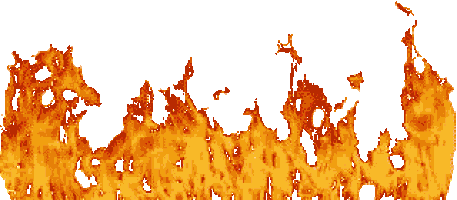

ELY — Residents in northern Lake and St. Louis counties evacuated Monday and Tuesday, July 13-14, as extreme fire conditions fueled wildfire growth. The Fernberg Corridor, northeast of Ely, was evacuated Monday after the previously contained Camp Fire reignited, spreading 4.5 miles in half a day. The fire initially burned less than 2 acres after being started by lightning on July 7, roughly 8 miles northeast of the Cloquet Line. Tuesday afternoon, most of the Echo Trail between Crane Lake and Ely was told to evacuate because of the Sioux Fire, which was burning north of Echo Trail and east of Jeanette Campground. The Sioux Fire was estimated at around 3,500 acres as of midday Tuesday. Additional areas from west of Crane Lake to Winton and the end of the Gunflint Trail were under ready and set status as of Tuesday, meaning residents should begin preparing for possible evacuation. Follow St. Louis, Lake and Cook counties for the latest evacuation information. A temporary evacuation point has been established at the Babbitt Municipal building. It closes at 9 p.m. Tuesday and reopens at 8 a.m. Wednesday. As of Tuesday evening, there were no public shelters established. Evacuations continue in the now-closed Boundary Waters Canoe Area Wilderness. The three largest wildfires are burning in the Boundary Waters. As of midday Tuesday, according to the official daily update: Dark Fire/Bear Trap Fire, now known as Bear Trap Fire: 12,896 acres. South of Lac La Croix, 20 miles north of Ely. Thumb Fire: 12,327 acres. 6 miles south of Gakijiwanong Anishnaabe Nation in Canada. The fire has crossed the Canadian border. Wolfpack Fire: 2,234 acres. Southeast of Wolfpack Lake. The 14 other fires are burning outside of the Boundary Waters. One new fire began Tuesday, near Snowbank Lake. The Birch Island Fire was estimated around a quarter-acre as of midday Tuesday, and the cause is under investigation. As of the official daily update midday Tuesday, the largest fires outside the Boundary Waters are: Sioux Fire: 3,516 acres. North of Echo Trail and east of Jeanette Campground. Camp Fire: 2,200 acres. 5 miles north of Winton. Chub Fire: 81 acres. North of Chub Lake, southwest of Crane Lake. The other fires range from less than an acre to 14 acres. The latest fire information can be found on InciWeb. Denise Myers is the general manager of Lodge of Whispering Pines north of Ely. She said she has fielded many cancellations. “We're just starting to gear up for the time that it gets the busiest,” she said. “Most people come at the end of July and the beginning of August, when the bugs are a little bit less and the berries are out.” Most of the fires are thought to have been sparked by a dry lightning storm last week. Near-critical fire weather is expected to continue Wednesday. The St. Louis County Board of Commissioners issued a disaster declaration Tuesday to respond to the developing wildfire situation. The declaration is the first step in eventually receiving state and federal reimbursement for damage. The Minnesota Pollution Control Agency issued an air quality alert for large areas of the state on Tuesday due to the wildfire smoke. The alert will stay in effect until at least 11 a.m. Friday. The worst air quality is expected in the Arrowhead. Cook, Lake and Northern St. Louis counties are forecast to reach the maroon, or hazardous, air quality level. Southern and central St. Louis and Carlton counties are expected to hit a very unhealthy level, with other parts of the Northland hitting the unhealthy level. The PCA recommends avoiding physical activities outdoors.
